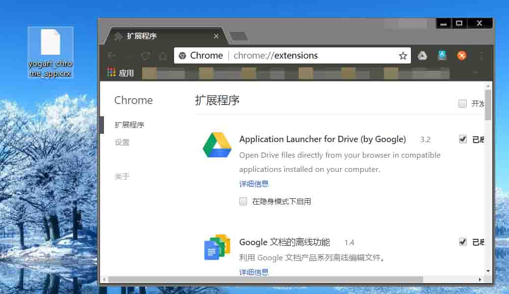
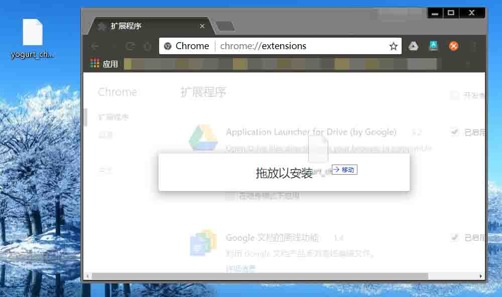
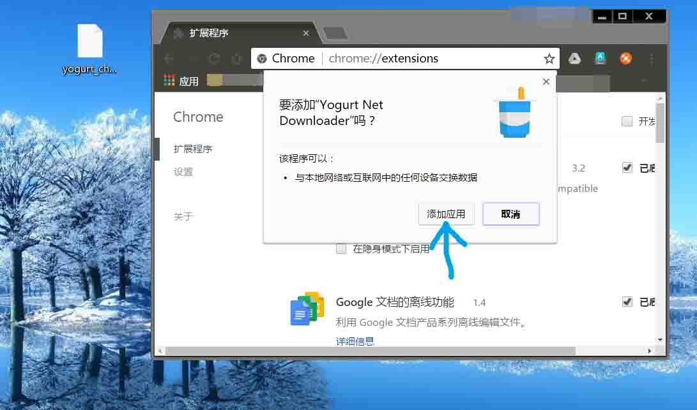
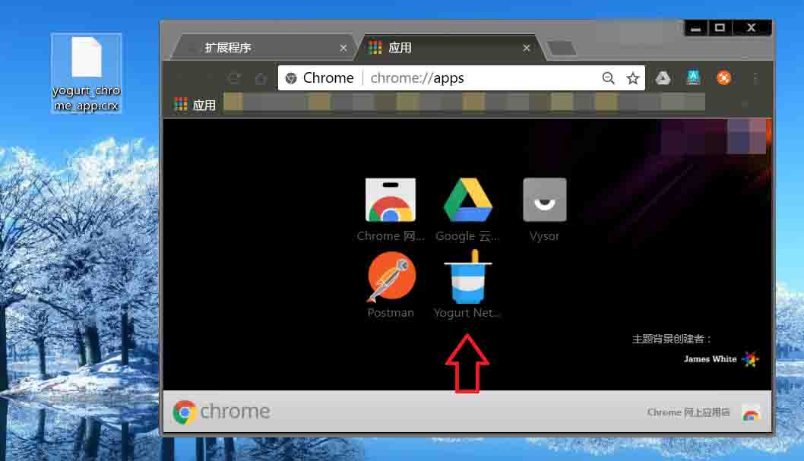
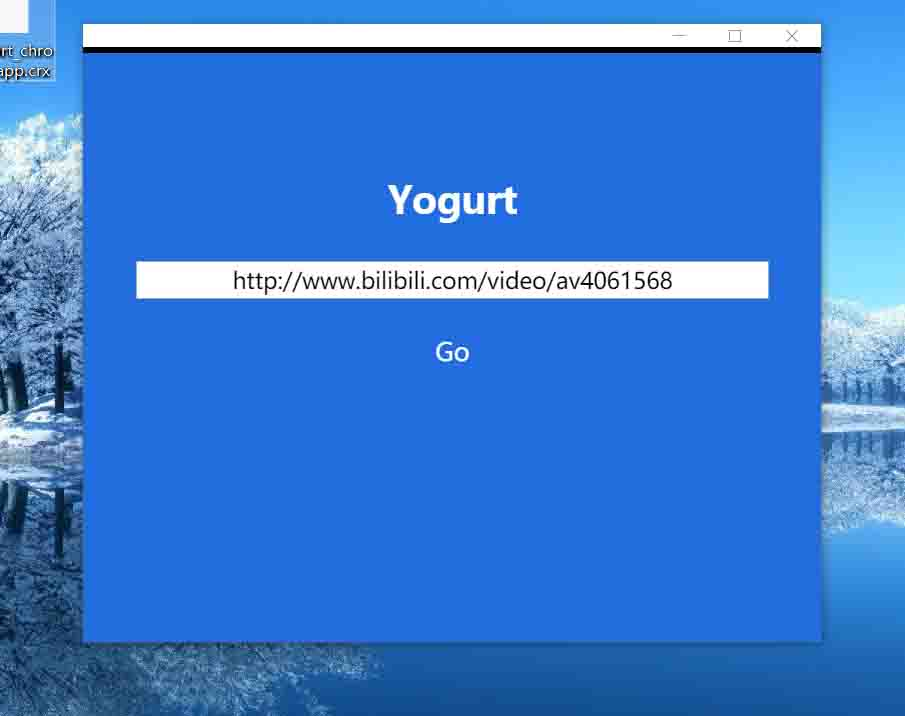
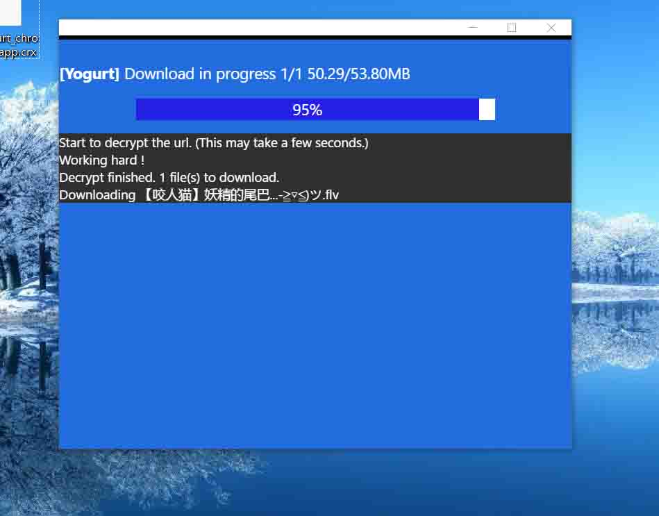
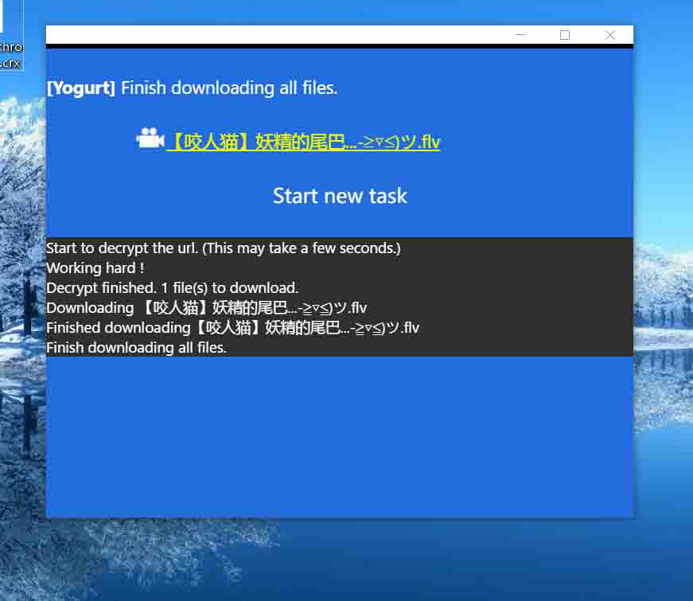
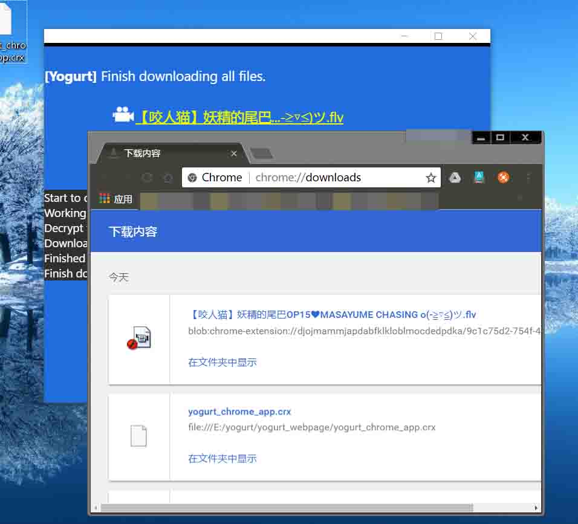
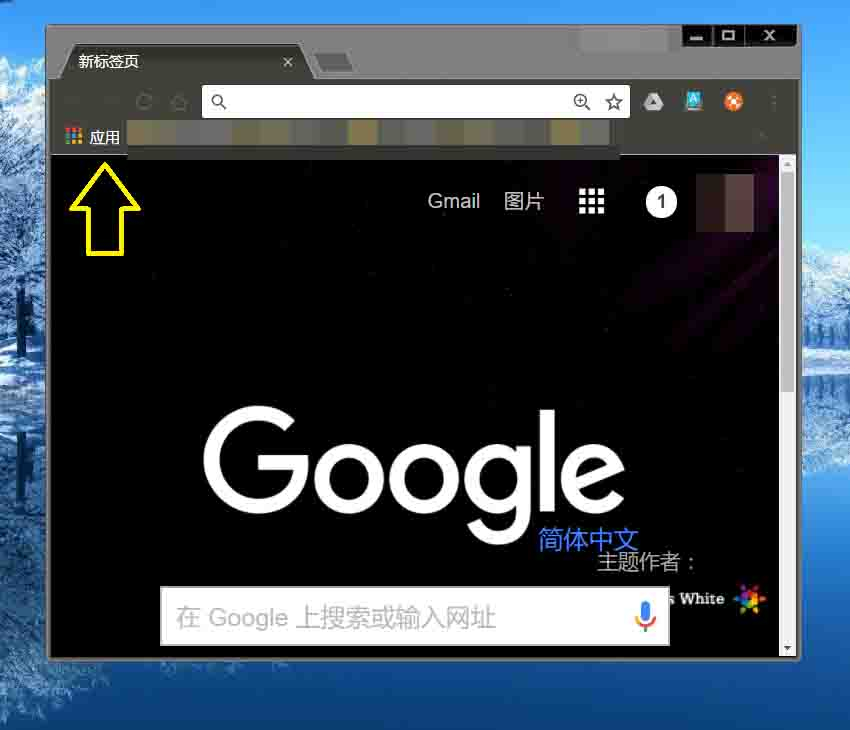

Yogurt
Email报bug yogurtNetDL@gmail.com
使用指南
第一步，右键点击这个 链接 Chrome Extension，并选择“链接另存为”，保存至桌面。
或者进入 这个页面 找到适合您的下载方式。
（请勿直接点击安装，Chrome会拒绝安装非Chrome应用市场提供的扩展程序，请跟着下面的步骤来~）
第二步，手动打开这个链接 chrome://extensions/
并把这个窗口缩小，这样放在刚下载的文件旁边。

第三步，将刚下载的插件拖拽至这个页面，点击“添加应用”。
（请注意我的扩展程序需求权限仅为网络数据交换。请勿安装需求额外权限的扩展程序。）


第四步，在弹开的窗口上点击Yogurt Net Downloader。

输入框中复制入想下载的链接地址。



点击下载链接。

第五步，以后再次打开时，请点击Chrome左上角的“应用”图标。
如果看不到应用图标，请右键点击Chrome书签栏，选择“显示应用快捷方式”。
或者你可以右键单击应用图标，选择“创建快捷方式”到桌面。

Yogurt Net Downloader 1.0
Email yogurtNetDL@gmail.com